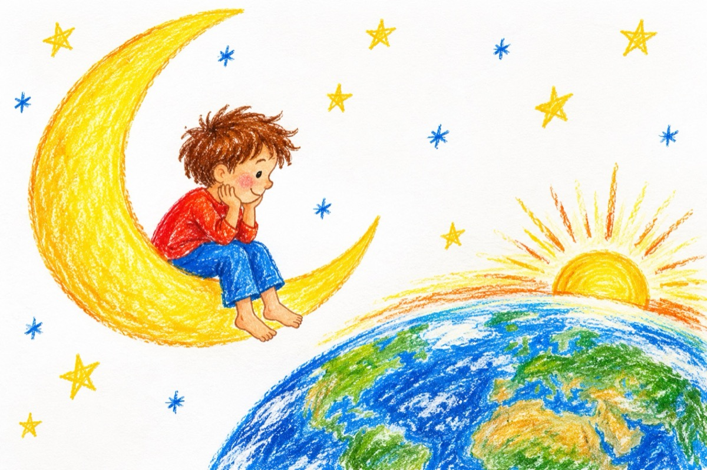

Înc-un ceas a mai rămas
Înc-un ceas a mai rămas,
Dar pe-acesta-l dau degeaba
Pe un iaurt sau un caș,
Fiindcă mă cuprinde graba!
Vreau să plec fără de ceas
Să mă zbengui, fără timp,
Să stau cât vreau în popas
Și cu Zeii în Olimp!
Să m-avânt în infinit,
Părăsit de ghinion,
Să privesc ce n-am văzut:
Chipul lui Tutancamon!
Să cutreier de la Alfa
Și de-acolo la Omega,
Să-mi văd în sfârșit și ceafa,
Să mă plimb prin Andromeda!
Să ajung pân’ la Adam
Și la Eva ,,mama mea’’
Și să-ntreb ce drepturi am
Ca un vajnic pământean.
Pentru că acel ,,CEVA’’
Ce-au greșit atunci în Rai
Ne-au dat timpul făr’ să vrea
De-avem ,,traiul pe vătrai’’!
Vreau să merg și pe Saturn,
Să iau pulsul lui Titan,
Să-l întreb și pe Neptun,
De-a văzut vreun pământean,
Care umblă ștrengărește
Făr’ a fi motorizat
Timpul cum îl păcălește
În a cerului palat?
Și să odihnesc pe lună,
Să privesc de-aici de sus
Lumea mea, lumea nebună
Și soarele în apus.
Și să-i văd ieșiți din timp
Din pierduta rațiune
Zeii cum urlă-n Olimp,
Blestemați de omenire
Că atunci, la început
Separați, trăind pe munte
N-au știut ce au crescut
Oile ce-s rătăcite.
Prometeul legendar
Cu sărutul lui de foc
Ce ni l-a trimis ca dar
Viitorului potop!
Și de ceasul s-a stricat,
Și de timpul s-a oprit,
O să-l dau la reparat
Fiindcă timpul m-a găsit
Și acum mergem în doi -
Eu pe jos, el în cadran
Dând minutele-napoi,
Socotind an după an!
Acest ceas mi-a mai rămas,
Dar pe-acesta nu-l mai vând
Vreau acuma pas cu pas
Universul să-l cuprind!
Vasile Groza